[1] 5Data 200: Lecture 1b
Introduction to Toolkit!
Medina - CSU Channel Islands
Introduction to R
In this class, you are learning the foundations of programming for data science.
R is the programming language we will use.
We will learn how to use R to:
- perform calculations,
- make plots,
- import, clean, and export data, and
- fit models
Why not let AI write your code?
AI can write code quickly, but if it writes the code for you, you miss the practice needed to learn how to:
- understand what code is doing
- diagnose and fix errors
- modify code for a new problem
- judge whether the results make sense
Struggling with code is part of learning to code. Later, once you have these foundations, AI can be a powerful programming assistant.
R as a calculator
Notice how:
- the code starts with a “1” to denote line 1 of the code
- the output starts with “[1]” to denote line 1 of output
Object assignment operator
<- is called an assignment operator because it says that the value on the right of the operator should be stored into the object to the left of the operator
Example:
This means save the value 7 into the object my_apples.
Math with objects
We can do operations with objects
R is case-sensitive
Capitalization matters!
versus
Functions
do() is a function;
something is the argument of the function, it is the function input.
Example of a function
The round() function takes two arguments, a number and how many digits to round to.
Vectors
A common function we will use is the c() function, which combines values into a single object, called a vector.
Characters
In R, quotes tell R “this is text.” Without quotes, R assumes you are referring to the name of an object, function, or other piece of code.
Data frames
The most common object type we will work with in this class is a data frame which stores information in rows and columns
Getting Help
In order to get any help we can use ? followed by function (or object) name.
tidyverse style guide
canyoureadthissentence?
Valid R code can be formatted in many ways. Inconsistent formatting can make it very difficult to understand code from someone else, or even your own code!
To combat this we will follow certain code formatting guidelines, specifically the tidyverse style guide.
tidyverse style guide
After function names do not leave any spaces.
Before and after operators (e.g. <-, =) leave a space.
Put a space after a comma, not before.
Object names are all lower case, with words separated by an underscore.
![A cartoon of a fuzzy round monster face showing 10 different emotions experienced during the process of debugging code. The progression goes from (1) “I got this” - looking determined and optimistic; (2) “Huh. Really thought that was it.” - looking a bit baffled; (3) “...” - looking up at the ceiling in thought; (4) “Fine. Restarting.” - looking a bit annoyed; (5) “OH WTF.” Looking very frazzled and frustrated; (6) “Zombie meltdown.” - looking like a full meltdown; (7) (blank) - sleeping; (8) “A NEW HOPE!” - a happy looking monster with a lightbulb above; (9) “insert awesome theme song” - looking determined and typing away; (10) “I love coding” - arms raised in victory with a big smile, with confetti falling.](img/coding-process-illustration.png)
Artwork by Allison Horst
RStudio
RStudio is the software we will use to write code in.
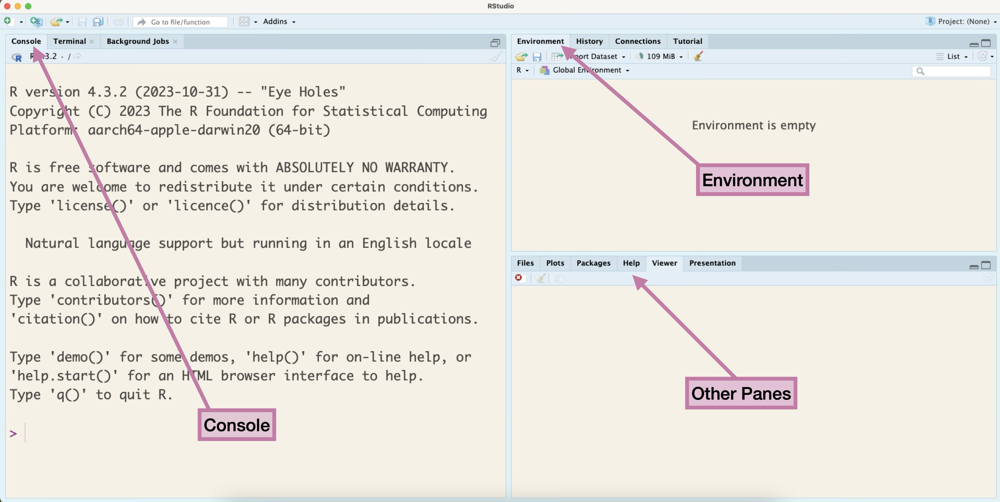
Quarto document
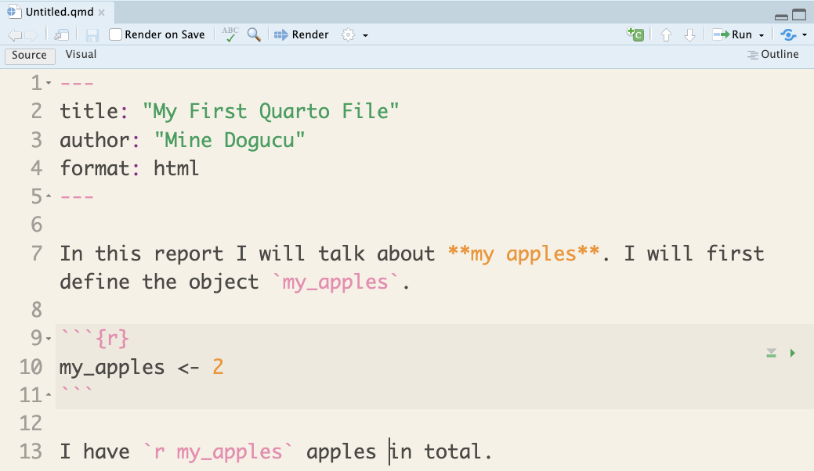
Quarto parts
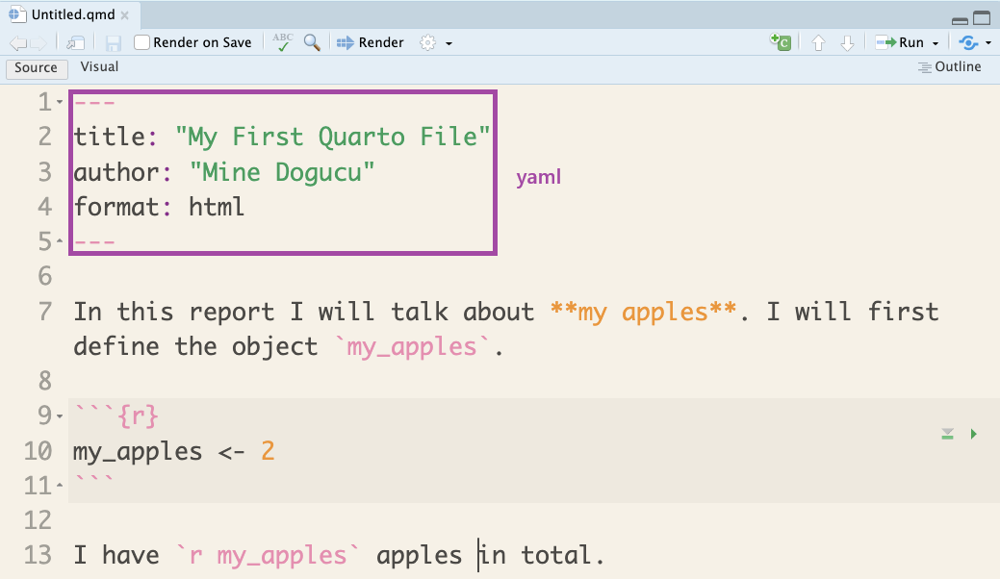
Quarto parts
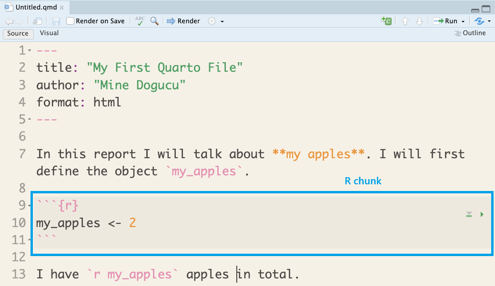
Quarto parts
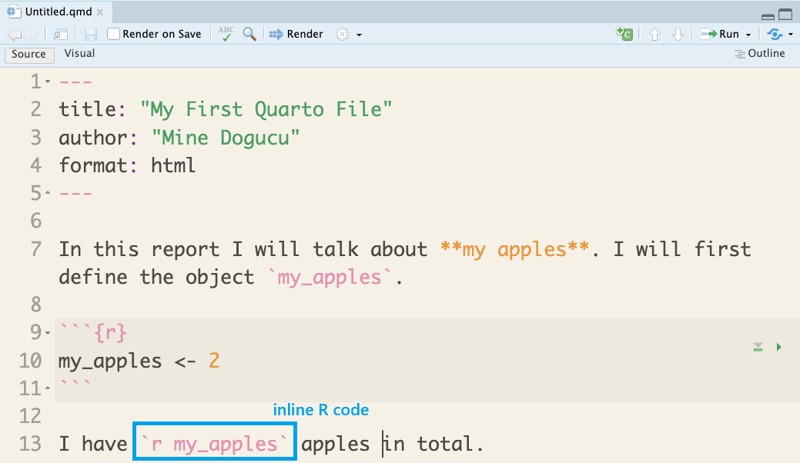
Quarto in RStudio
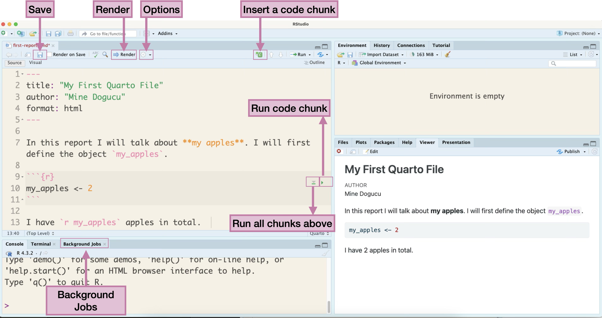
Quarto document illustration

Artwork from ‘Hello, Quarto’ keynote by Julia Lowndes and Mine Çetinkaya-Rundel, presented at RStudio Conference 2022. Illustrated by Allison Horst.
Slides for this course
Slides that you are currently looking at are also written in Quarto. You can take a look at them on our course’s GitHub organization in the lecture repo.
Version Control
Does this look familiar?
hw1
hw1_final
hw1_final2
hw1_final3
hw1_finalwithfinalimages
hw1_finalestfinal
What if we tracked our file with better names for each version and have only 1 file hw1?
hw1 added questions 1 through 5
hw1 changed question 1 image
hw1 fixed typos
We will call the descriptions in italic commit messages.
git vs. GitHub
git allows us to keep track of different versions of a file(s).
GitHub is a website where we can store (and share) different versions of the files.
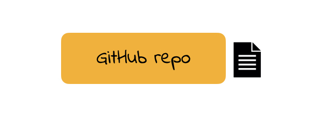
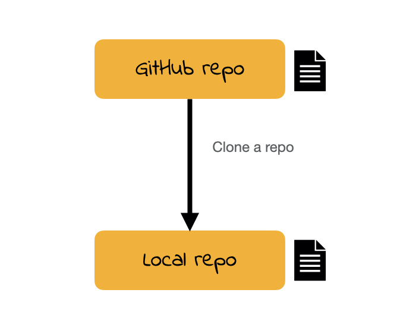
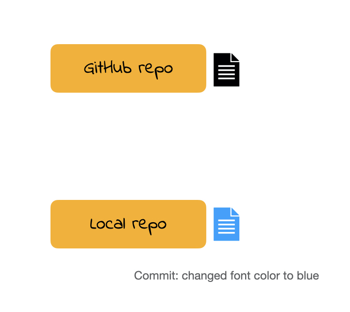
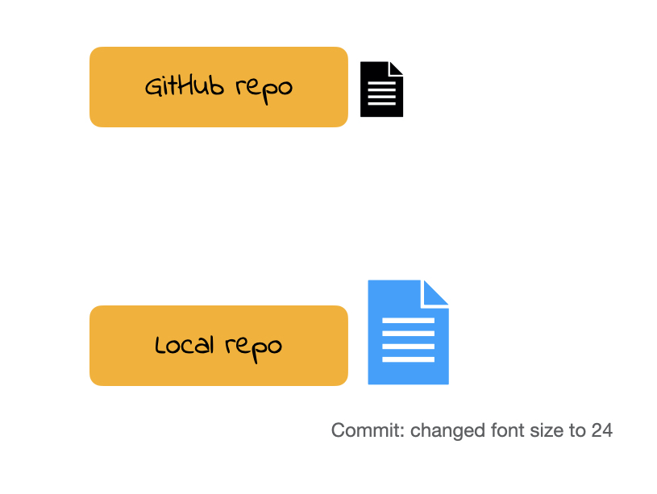
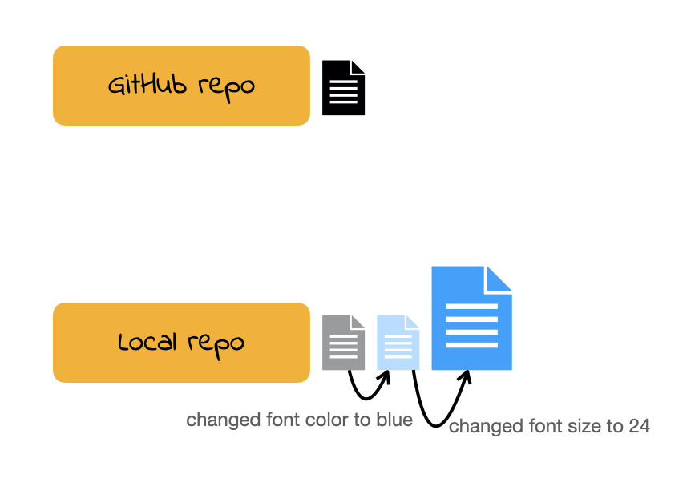
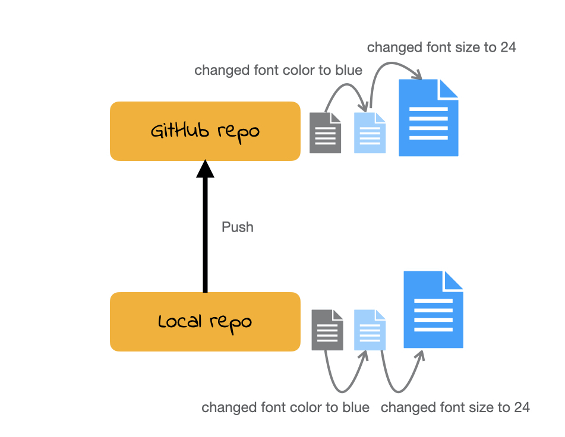
Cloning a repo
repo is a short form of repository. Repositories contain all of your project’s files as well as each file’s revision history.
For this course our weekly repos (lecture code, activity etc.) are hosted on Github.
To clone a GitHub repo to our computer, we first copy the cloning link as shown in screencast then start an RStudio project using that link.
Cloning a repo pulls (downloads) all the elements of a repo available at that specific time.
Commits
Once you make changes to your repo (e.g. take notes during lecture, answer an activity question) you can take a snapshot of your changes with a commit.
This way if you ever have to go back in version history you have your older commits to get back to.
This is especially useful, for instance, if you want to go back to an earlier solution you have committed.
Push
All the commits you make will initially be local (i.e. on your own computer).
In order for us to see your commits and your final submission on any file, you have to push your commits. In other words upload your files at the stage in that specific time.
(An incomplete) Git/GitHub glossary
Git: is software for tracking changes in any set of files
GitHub: is an internet host for Git projects.
repo: is a short form of repository. Repositories contain all of your project’s files as well as each file’s revision history.
(An incomplete) Git/GitHub glossary
clone: Cloning a repo downloads all the elements of a repo available at that specific time.
commit: A snapshot of your repo at a specific point in time. We distinguish each commit with a commit message.
push: Uploads the latest “committed” state of your repo to GitHub.
Do you git it?
![Left panel, against a blue sky with white clouds, a confident-looking monster climbs a rock face. Their rope's anchors, secured with carabiners, are labeled from bottom to top and say 'Initial commit', 'Data Cleaned', 'Analysis completed'. Another anchor on their harness, ready to place, is labeled 'Manuscript drafted'. Right panel, against a gray sky with rain and lightning, a stressed-looking monster climbs a rock face. Their rope has a knot, is frayed, and is looped around one foot. Their anchors, placed haphazardly and not well-secured, are labeled things like 'analysis_final_v2.xls', 'analysis_final_final.xls', and 'ignore_this.xls'. Text above the left panel says 'When working with GitHub we can navigate with more obvious, safe, streamlined routes that let us focus on the science-y things we want to do…' Text above the right panel says: '...but working without GitHub can be disorienting, with too much time spent sifting through past work to figure out next steps forward.'](img/GitHub-climb-illustration.png)
Artwork by Allison Horst
Hardware
- I recommend that you have a personal laptop for this class.
- If you do not have one that you can install software on, please consider renting a laptop from the campus library for the semester.
- If you do not have a personal laptop, either owned or rented, then you can use CI Virtual Labs on any computer. Once you log into CI Virtual Labs it will appear as if you are on a campus computer.
Setting up toolkit
We will do our software installations and configurations in class together. If you missed class or need to do this for a second device, please refer to these instructions.